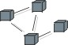

| Артефакт: Модель развертывания |
|
|  |
| Этот рабочий продукт показывает конфигурацию узлов выполнения во время работы, связи между ними, а также находящиеся на этих узлах экземпляры компонентов и объекты. |
Домены: Анализ и проектирование
Типы рабочих продуктов: Модель |
|
Назначение
-
Для фиксации конфигурации элементов выполнения и связей между этими элементами в системе.
|
Взаимосвязи
| Роли | Ответственный:
| Изменен:
|
| Задачи | Вход для:
| Выход из:
|
Описание
| Основное описание |
Модель развертывания состоит из одного или нескольких узлов (элементов выполнения, имеющих по крайней мере один
процессор, память и, возможно, другие устройства), устройств (стереотипные узлы, не имеющие возможности
выполнения на смоделированном уровне обобщения) и коннекторов между узлами и между узлами и устройствами. Модель
развертывания также отображает процессы на эти элементы выполнения, допуская распределение алгоритма между
узлами.
Модель развертывания используется следующими ролями:
-
Архитектором программы для фиксации и понимания физической среды выполнения системы, а также для понимания
вопросов распределения.
-
Проектировщиками (включая проектировщиков программного обеспечения и баз данных) - для понимания
распределения обработки и данных в системе.
-
Администратором системы - для понимания физической среды, в которой выполняется система.
-
Диспетчером развертывания - при планировании передачи продукта сообществу пользователей.
-
Руководителем проекта - при оценке затрат, для Бизнес-прецедента и при планировании приобретения, установки
и обслуживания.
|
Иллюстрации
Доводка
| Опции представления |
Представление UML: Модель.
Модель развертывания может иметь следующие свойства:
-
Введение: Текстовое описание, которое служит в качестве краткого введения в
модель.
-
Узлы: Элементы выполнения в системе. Узлы могут иметь следующие свойства:
-
Имя
-
Описание, предоставляющее информацию о процессоре, объеме постоянной и оперативной памяти, и другую
информацию о возможностях устройства.
-
Список процессов и нитей, выполняемых в процессоре. В этом списке могут также быть перечислены компоненты
программного обеспечения, которые выполняются в каждом процессе.
-
Список блоков развертывания, которые будут установлены в узле.
-
Устройства: Физические устройства, не имеющие функции обработки (на смоделированном уровне
обобщения), которые поддерживают узлы процессоров. Устройства могут иметь следующие свойства:
-
Имя
-
Описание, предоставляющее информацию о функциональных возможностях устройства.
-
Коннекторы: Соединения между узлами и между узлами и устройствами. Коннекторы могут иметь
связанную информацию, относящуюся к емкости или пропускной способности коннектора.
-
Диаграммы: Диаграммы в модели, принадлежащие пакетам.
Модель развертывания обычно изображается на диаграмме, подобной приведенной ниже:

Модель развертывания является необязательной для систем с одним процессором либо для простых систем, в которых
отсутствует или практически отсутствует распределение обработки.
Этот план является обязательным для систем, имеющих сложную конфигурацию сети и процессоров.
|
© Copyright IBM Corp. 1987, 2006. Все права защищены..
|
|